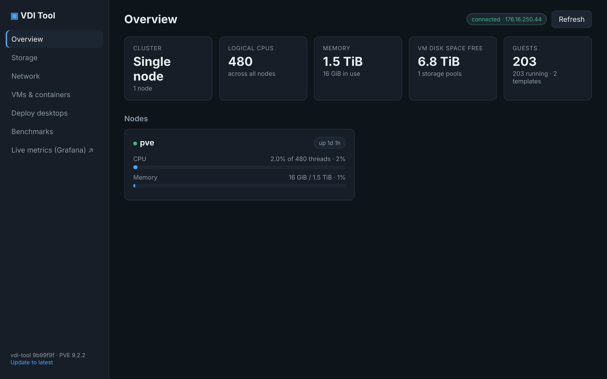
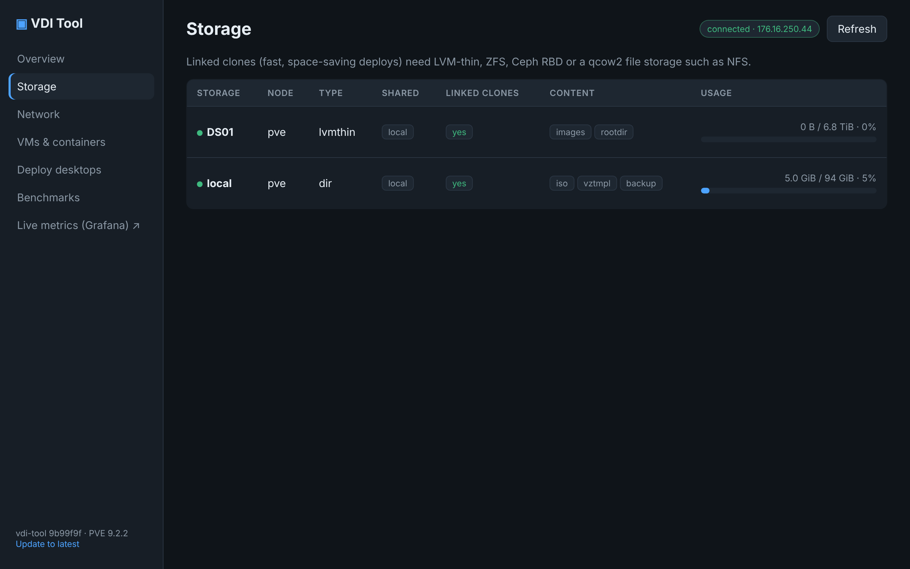
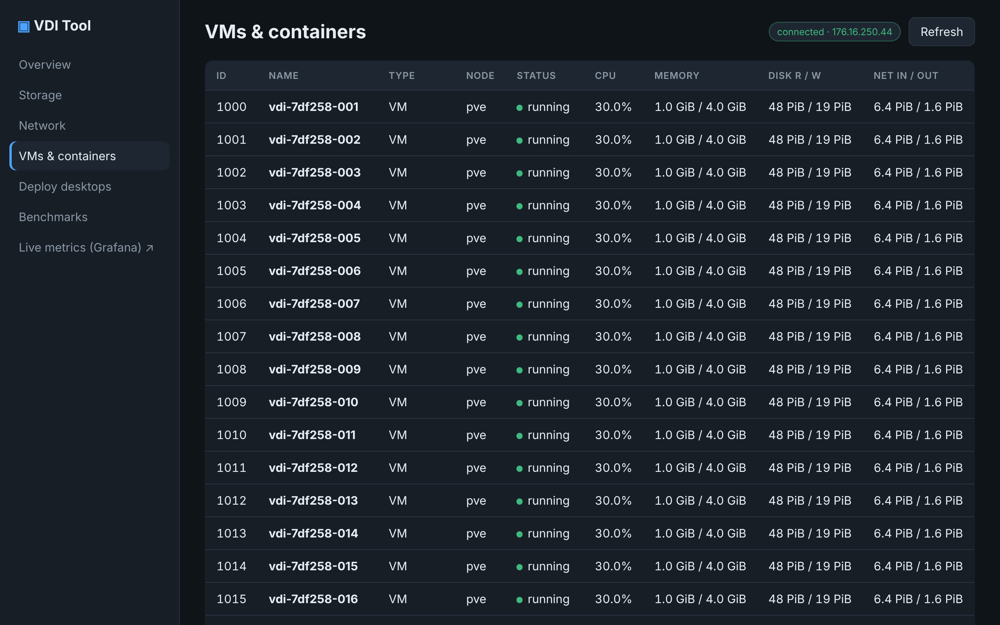
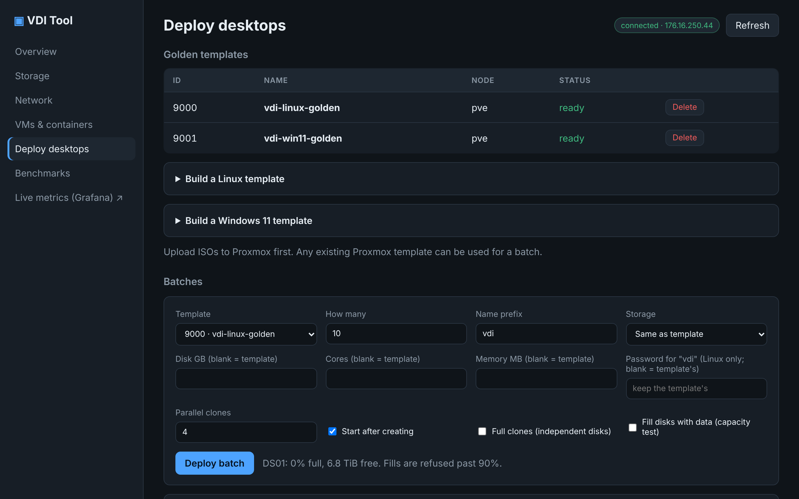
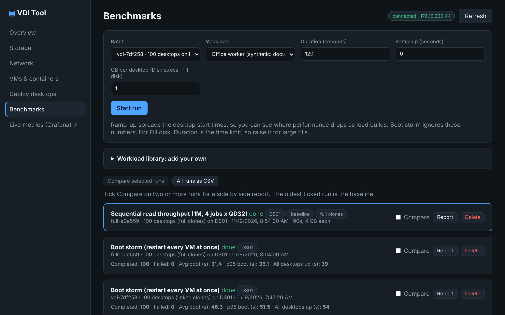
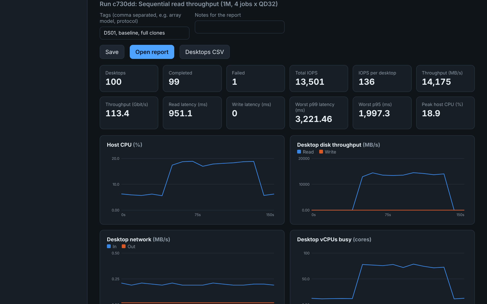
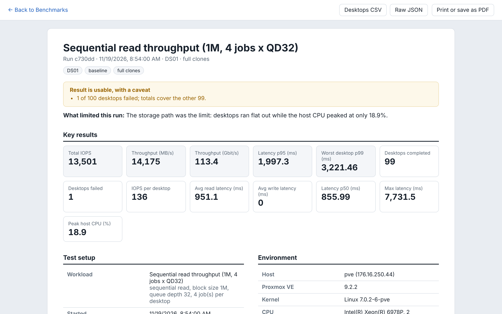
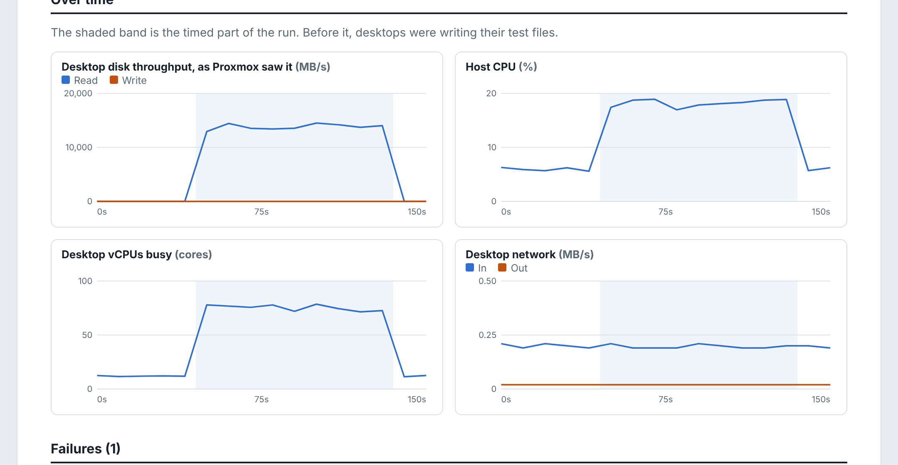
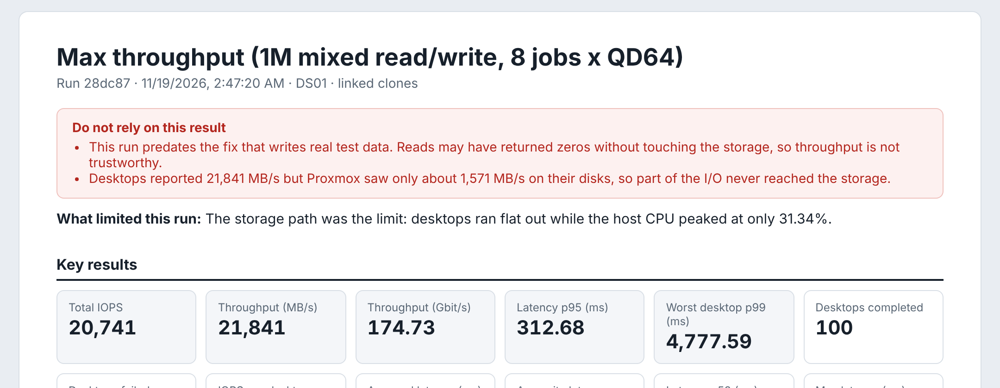
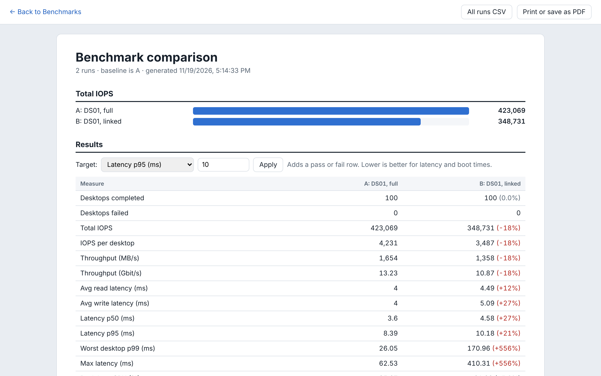

How it works: deploying desktops in bulk on Proxmox VE and measuring what the storage, network and host can really carry.
Guide, version 1 · 19 November 2026 · covers tool revision fcdcf1f
Source: github.com/Realishbird/vdi-tool
vdi-tool answers one question: how much real work can this storage, network and host carry, and where does it give out first?
It does that by creating many virtual desktops on Proxmox VE, making all of them do work at the same moment, and recording what happens. Because the load comes from real virtual machines doing real I/O through the full Proxmox storage stack, the result reflects what users would feel, not what a single synthetic test on the host would claim.
The first use is VDI sizing on local storage. The larger goal is testing an external storage array over 100 Gb links (up to 400 Gb/s of network in total) across NFS, iSCSI, NVMe over TCP or RDMA, and Fibre Channel. The tool does not care about the protocol: anything Proxmox can attach as a storage becomes a target, and the same workload can be run against each one and compared like for like. The workload library is general (database, sequential throughput, custom patterns), so it is useful beyond VDI.
The tool lives in one small Linux container (LXC) on the Proxmox host. Nothing is installed on the host itself apart from that container and an API token.
Run one command on a Proxmox host as root. Running it again updates an existing install.
bash -c "$(curl -fsSL https://raw.githubusercontent.com/Realishbird/vdi-tool/main/install.sh)"
vdi-tool (2 cores, 2 GB RAM, 8 GB disk by default).vdi@pve with a token and gives it to the container. The token is stored only inside the container.Options are environment variables placed before the command, for example a fixed address: VDI_IP=10.0.0.50/24 VDI_GW=10.0.0.1, or a development branch: VDI_BRANCH=step2-deploy. The full list is at the top of install.sh.
Click Update to latest at the bottom left of the GUI, or run the one-liner again. The update pulls the newest revision from GitHub and restarts the service, which takes a few seconds.
The first four screens are read-only views of what Proxmox has. They are there so you can check the starting point before deploying anything.



The Network screen lists bridges and physical ports per node. The link Live metrics (Grafana) opens the dashboards described in section 8.
A golden template is a finished desktop image that batches are cloned from. The tool builds them for you, or you can use any template that already exists in Proxmox.

vdi with the password you chose.Upload the Windows 11 ISO and the VirtIO driver ISO to a Proxmox ISO storage first. Then:
autounattend.xml and a setup script.vdi user, enables Remote Desktop and installs the guest agent.On the test host this took about 30 minutes with no clicks.
The password you type for a template is stored only as a one-way hash, and only until the build finishes. A batch can be given its own password, and Set password on a batch changes it on every running desktop through the guest agent.
A batch is a numbered group of desktops cloned from one template. Fill in the form, press Deploy batch, and watch the progress bar.
| Linked clones (default) | Full clones (tick box) | |
|---|---|---|
| What it is | Each desktop shares the template's disk and stores only its own changes. | Each desktop gets a complete private copy of the disk. |
| Deploy time, 100 desktops | about 1 minute | about 15 minutes |
| Space used at the start | almost none | about 3.7 GiB each |
| Use it for | Quick tests, VDI as it is usually run, boot storms on shared images. | Storage tests where every desktop must hit its own blocks, and capacity tests. |
Linked clones need a storage that supports them (LVM-thin, ZFS, or qcow2 files). If the batch goes to a different storage than the template, the tool makes full clones automatically.
| Option | What it does |
|---|---|
| How many, Name prefix | Number of desktops and the start of their names. IDs are reserved up front so two batches never collide. |
| Storage | Where the desktops' disks go. This is how you aim a test at a specific array or protocol. |
| Disk GB | Grows each desktop's disk beyond the template's size. The filesystem grows on first boot. |
| Cores, Memory | Override the template's size per desktop. |
| Fill disks with data | After deploy, every desktop writes real, unique data to use up space on purpose. For testing an array near full. The tool refuses fills that would take a storage past 90%. |
| Parallel clones | How many clone jobs run at once. |
Proxmox sometimes refuses a task when many are launched in the same instant. The tool paces its requests and retries those refusals, and a half-made VM is cleaned up before the retry. Deleting a batch removes only VMs that carry that batch's tag, so it cannot delete anything else.
A run takes one batch and one workload, starts the workload in every desktop, and records the result.

| Workload | What each desktop does | What it tells you |
|---|---|---|
| Office worker | Writes and reads documents, compresses, computes, downloads files, with think time between actions. | Response time users would feel at this density. Synthetic, not real applications. |
| VDI knowledge worker disk | 25 IOPS per desktop, mixed block sizes, 70% write. | Latency at a realistic steady VDI load. |
| Disk stress | 4k random, 70% read, queue depth 16, flat out. | The IOPS ceiling. Not a real-world pattern. |
| Database | 8k random, 60% read, 4 jobs at queue depth 32. | Behaviour under an OLTP-like load. |
| Sequential read, Sequential write | 1M blocks, 4 jobs at queue depth 32. | The throughput ceiling in GB/s and Gbit/s. |
| Max throughput | 1M mixed read and write, 8 jobs at queue depth 64. | The hardest push on bandwidth. |
| CPU stress | Hashes data on every core. | Host CPU headroom and scheduling. |
| Fill disk | Writes unique data and keeps it. | Behaviour as the storage fills up. |
| Boot storm | Every desktop is stopped, then all are started at once. | Time until every desktop is usable again. |
You can add your own disk workloads under Workload library: add your own: pattern, block size, read share, queue depth, parallel jobs and an optional IOPS cap. They then appear in the Workload list.
Before each run the tool also stops anything left over from an earlier run inside the desktop, so two workloads never overlap. If a desktop never reports, the tool asks it what happened through the guest agent and puts the answer in the error.
| Setting | Meaning |
|---|---|
| Duration | Length of the timed part. For Fill disk it is the time limit. |
| Ramp-up | Spreads the start of the desktops over this many seconds, to see where performance drops as load builds. |
| GB per desktop | Size of the test file for disk workloads, or the amount to write for Fill disk. Use a size larger than the storage's cache to measure the disks and not the cache. |
| Source | What | Where it goes |
|---|---|---|
| Inside each desktop | The workload's own result: IOPS, MB/s, average latency and p50, p95, p99 and maximum; action times for the office workload; boot time. | Saved with the run, shown per desktop. |
| Proxmox, every 10 s during a run | Host CPU and memory, and for the batch: disk read and write MB/s, network in and out, vCPUs busy. | Saved with the run, drawn as charts. |
| Proxmox, every 15 s all the time | Per VM, per node and per storage: CPU, memory, disk and network counters, storage usage. | Prometheus, shown in Grafana. |

Grafana runs in the container on port 3000 and opens without a login in view-only mode. The provided dashboard shows host load, per-VM disk and network rates and storage usage, live and for any past time range. Prometheus keeps the history, so you can look at what the whole host was doing during any run.
Every run has a report page made to be printed or saved as PDF. Open it with Report on a run card.


| Check | Result |
|---|---|
| Some desktops failed, 10% or fewer | Amber: totals cover the desktops that finished. |
| More than 10% of desktops failed, or none completed | Red: totals understate the batch. |
| Desktops report much more throughput than Proxmox saw on their disks | Red: part of the I/O never reached the storage. |
| Disk run made before real test data was written | Red: reads may have been zeros. |

Tick Compare on two or more runs and press Compare selected runs. The oldest ticked run is the baseline (A). Each measure shows the percentage change against A, green when better and red when worse. A target such as "latency p95 at most 10 ms" adds a pass or fail row. This is the page for linked against full clones, local against array, or one protocol against another.

Host: 2 x Intel Xeon 6978P (480 threads), 1.5 TiB RAM, Proxmox VE 9.2.2. Storage: DS01, an LVM-thin pool on one 7 TB NVMe drive. All tests used 100 Linux desktops unless noted. Measured on 19 November 2026.
| Test | Result | Status |
|---|---|---|
| Deploy 100 linked clones | about 1 minute | measured |
| Deploy 100 full clones | 15 minutes, 0 errors | measured |
| Deploy 3 Windows 11 linked clones | 21 s, guest agent answering 50 s later | measured |
| Boot storm, linked clones | 44 to 46 s average, all up in 56 to 65 s | measured |
| Boot storm, full clones | 32 s average, all up in 38 s | measured |
| Sequential read, full clones, real data | 14.2 GB/s (114 Gbit/s), host CPU 25%, 99 of 100 desktops reported | measured, valid |
| Fill test, 5 desktops with 50 GB disks | 100 GB of real data at 1.25 GB/s; space returned on delete | measured |
| CPU stress | 400 vCPUs busy, host at 83% | measured |
| 4k random 70% read, queue depth 16, full clones, real data | 522,000 IOPS, 3.4 ms average, 5.9 ms p95, host CPU 88%, 100 of 100 desktops | measured, valid |
| Max throughput (first attempt) | 175 Gbit/s claimed | invalid, see section 7 |
| Limit | Effect |
|---|---|
| The GUI has no login | Anyone who can reach port 8080 can deploy and delete desktops. Keep it on a trusted network. |
| The API token has the full PVEAdmin role | Wider than needed. To be narrowed. |
| Windows clones share one computer name and machine ID | Fine for load, not for domain join. |
| Windows desktops only run the boot storm | No disk or office workload on Windows yet. |
| The office workload is synthetic | It behaves like office work but does not run real applications. |
| No per-port network metrics on the host | Cannot yet show load per 100 Gb link. |
| The tool's address comes from DHCP | It can change. Set VDI_IP at install for a fixed one. |
| One run at a time | A second run is refused while one is active. |
| What | Where |
|---|---|
| GUI | http://<tool>:8080 |
| Report for a run | /report?runs=<id> |
| Comparison | /report?runs=<a>,<b> |
| All runs as CSV | /api/runs.csv |
| Grafana | http://<tool>:3000 |
| Prometheus | http://<tool>:9090 |
| What | Where |
|---|---|
| Application | /opt/vdi-tool |
| Saved state and runs | /var/lib/vdi-tool |
| Service | vdi-tool.service |
| Logs | journalctl -u vdi-tool |
| Path | Contents |
|---|---|
| install.sh | Host-side installer and updater (the one-liner). |
| scripts/ | Container setup, metrics stack setup, service files. |
| app/ | Backend: Proxmox client, deploy, runs and reports, Windows answer files. |
| web/ | GUI and the report page. |
| agent/workload.py | The script every desktop downloads and runs for a benchmark. |
| grafana/ | The provided dashboard. |
| docs/ | This guide and its source. |